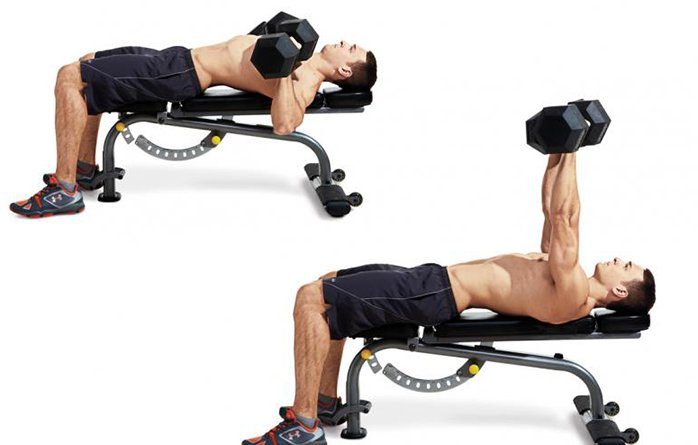

2. Flat Dumbbell Press (4set)
1set
20kg
15reps

2set
20kg
15reps
3set
25kg
10reps
4set
30kg
6reps
※유의사항
이완 2sec, 수축 1sec
이완시 호흡을 들어마시고 수축시 내뱉는다.
견갑을 후인하여 가슴을 고립시킨다.
삼두에 힘이가지 않도록 조심한다.
적당한 이완과 최대한의 수축을 가져간다.(어깨부상 방지)
<메인 페이지로 돌아가기>